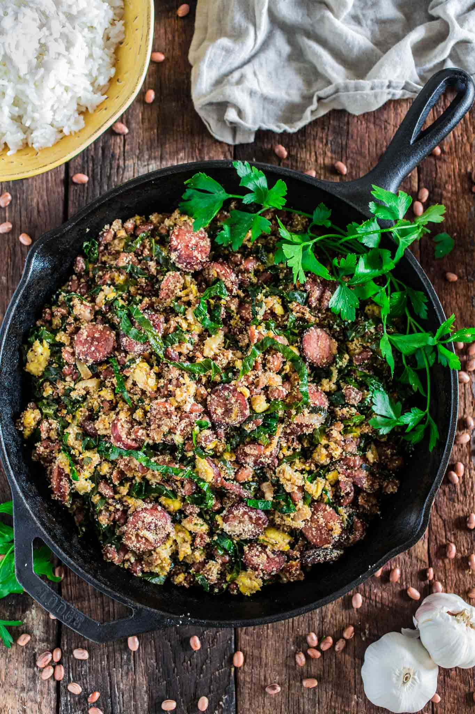

"Feijão Tropeiro"

Description
Embark on a culinary journey to Brazil with Feijão Tropeiro, a hearty and flavorful dish that captures the
essence of Brazilian cuisine. This traditional dish combines beans, typically black or pinto beans, with crispy
bacon, sausage, onions, garlic, and manioc flour, creating a harmonious blend of textures and flavors. Whether
enjoyed as a main course or a side dish, Feijão Tropeiro is sure to tantalize your taste buds and leave you
craving more of its comforting goodness.
Ingredients
- 2 cups cooked black beans
- 6 slices bacon, diced
- 1/2 pound sausage, diced
- 1 onion, chopped
- 2 cloves garlic, minced
- 2 cups manioc flour (farinha de mandioca)
- Salt and pepper to taste
- Chopped green onions for garnish
- Chopped parsley for garnish
Steps
- Heat olive oil in a skillet over medium heat. Add chopped onion and minced garlic, sauté until softened.
- Add shredded cooked chicken to the skillet, season with salt and pepper, and cook until heated through.
- In a separate saucepan, combine chicken broth and milk. Bring to a simmer.
- Gradually whisk in all-purpose flour until smooth, then cook until the mixture thickens, stirring
constantly.
- Remove from heat and let it cool slightly.
- Take a small portion of the dough, flatten it in your hand, add a spoonful of the chicken mixture, and shape
it into a teardrop shape.
- Dip each croquette in beaten eggs, then coat with breadcrumbs.
- Heat vegetable oil in a deep fryer or skillet over medium-high heat.
- Fry the croquettes in batches until golden brown and crispy.
- Drain on paper towels and serve hot.